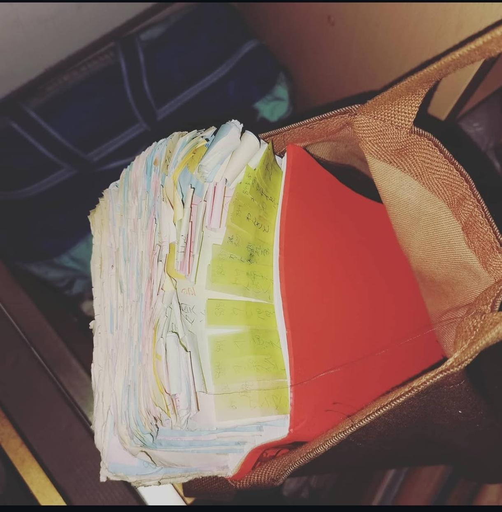
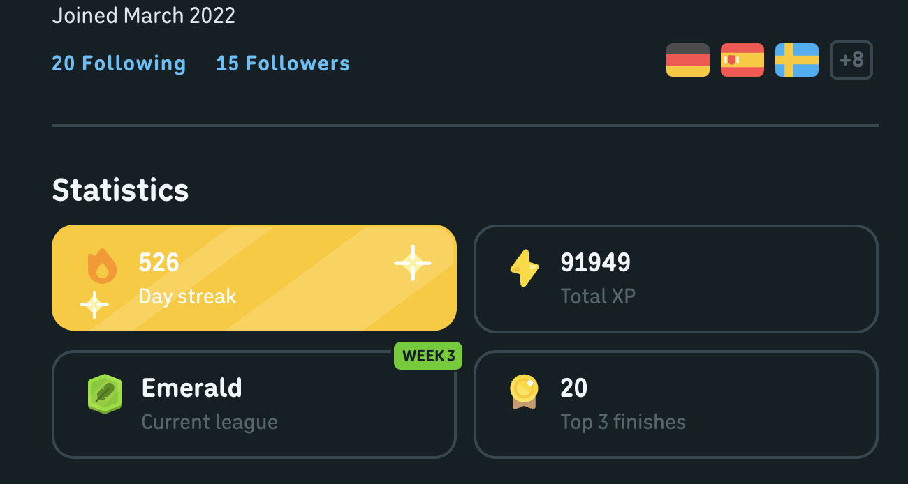

CASE No.01
PRESENTED
SNS体調変化分析アプリ「TwiAnalyzer」
SNS投稿を日常の主観的健康データとして扱い、体調・気分の変化を時系列で把握するプロトタイプを開発。
- 課題
- 問診表だけでは拾いにくい言葉の揺れや投稿傾向を可視化する。
- 手法
- 投稿データの整形、期間指定分析、投稿頻度・出現語・WordCloudの組み合わせ。
- 担当
- Pythonによる処理、可視化、発表資料での仮説・限界・改善案の整理。
Every day, in every way,
I'm getting better and better.
— Emile Coue
香川大学の情報工学系安藤研究室（主領域：NLP）で、日本語の災害証言を対象にしたデータ構築・分析に取り組んでいます。
関心領域は、災害時の認知・判断・後悔・教訓が、どのような言葉として記録に残るのかを計算的に扱うことです。
Pythonによる前処理、正規表現ベースの抽出、検証設計、可視化を軸に、将来的なLLM/RAG支援対話の基盤づくりへ接続しています。
「事実は、いつも書き留めた者の側にある」
課題設定からデータ設計、実装、可視化、検証設計まで手を動かして形にしたもの。
SNS投稿を日常の主観的健康データとして扱い、体調・気分の変化を時系列で把握するプロトタイプを開発。
宮城県土木部の東日本大震災職員証言を対象に、教訓の言語的痕跡を後悔・反実仮想表現として操作化し、再現可能な分析パイプラインを構築。
香川県で生まれ、よく動き、気になったものへまっすぐ手を伸ばす子供だった。幼い頃から辞書を引き、調べた言葉に付箋をつける習慣を、ゲームのように続けていた。
小学校後半から中学生の頃は、年間約300冊の本を読む時期もあった。物語や記録の中にある人の考え方、迷い、行動の理由に惹かれていった。
大学では情報工学と自然言語処理に出会い、いまは災害体験談に残る言葉から、人の心理や判断の揺れを読み解く研究を行っている。

関心の根は、言葉を調べる習慣と、物語を読み続けた時間にある。
小学生後半から中学生の頃は、年間約300冊を読むほど本に熱中した。
小学生の頃のバイブル。物語の中で、自分で考えて動くことの痛快さを知った。
社会は暗記科目ではなく、人々の人生や移動、笑いが積み重なった奥深い営みだと感じ、勉強全体への見方が変わった。
本を読むことは、知らない世界を覚える作業ではなく、人が何を見て、どう判断し、どう言葉に残すのかを追う時間だった。
読書と言葉への関心から、現在は情報工学・自然言語処理・災害支援へ関心が広がっている。
体験談やSNS投稿など、人の経験が残るテキストから状態や意図を読み解くことに関心がある。
避難判断、混乱、不安、正常性バイアスなど、非常時の認知と行動を言葉から捉えたい。
構造化した証言を、根拠とともに引き出せる支援対話システムへつなげる構想を設計している。
英語に加え、ドイツ語を中心にスペイン語やタガログ語も学習中。言語ごとの表現差にも関心がある。

2022年3月から継続し、500日以上の連続学習を記録。
同じ情報でも伝え方や順序で印象が変わることを実感。正しい情報を、相手に届く形で伝える手段の重要性を学んだ。
研究・実装で実際に触れている技術を、使いどころごとに整理。
Python、pandas、NumPy、正規表現、CSV/JSONL、pdfplumberでPDFから構造化コーパスを作る。
matplotlib、WordCloud、層化サンプリング、precision/recall/Cohen's kappaの検証枠組み。
TF-IDF、KMeans、PCA、silhouetteなどを使い、結果が弱い時も限界として扱う。
静的サイト、ページめくり体験、線形ビュー、アクセシビリティ、画像最適化を組み合わせる。
3D教材プロトタイプやJava学習UXなど、抽象概念を操作できる画面へ落とし込む。
実装済み成果としてではなく、構造化証言を根拠付き支援へ接続する研究設計として扱う。
「作った」と「測った」を分け、未測定の数値は出さない。再現性と検証可能性を先に置く。
机に向かう時間と同じくらい、外へ出て体を動かす時間も大切にしている。

走る、考える、声をかける。短い一瞬の判断が積み重なるところに面白さがある。

知らない土地を歩き、景色や食べ物、人の暮らしに触れることが気分転換になる。

冬の空気の中で斜面を滑る時間は、頭を空にして集中できる大切な楽しみ。

マラソン大会を目標に、日々の距離を少しずつ積み重ねる。
体力づくりと気分転換を継続している。